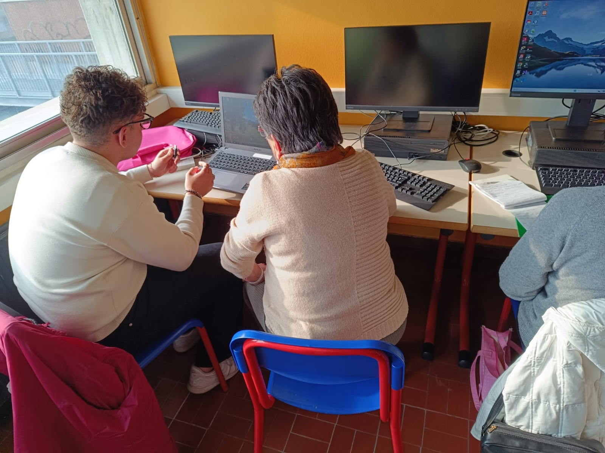
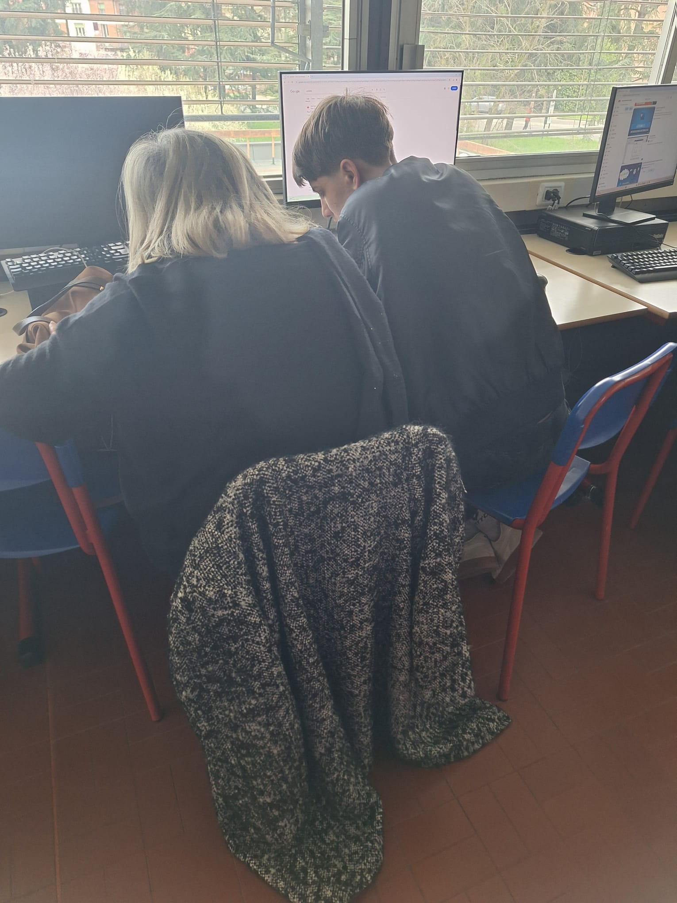
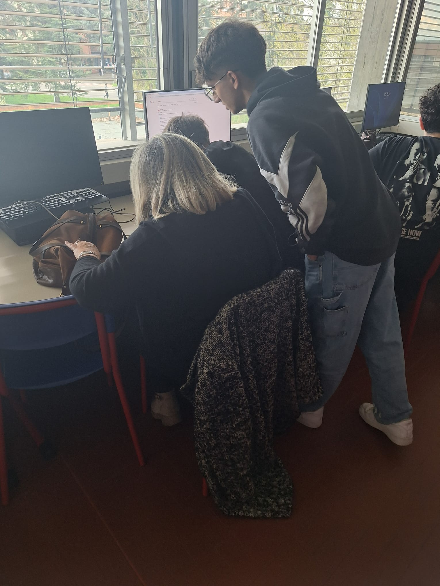

Introduzione
Il nostro istituto ha organizzato un corso di istruzione digitale rivolto agli anziani. Come studenti della classe terza, abbiamo avuto il compito di preparare e gestire le lezioni pratiche, offrendo assistenza personalizzata ai partecipanti.

Riconoscimento delle difficoltà
Durante il progetto, abbiamo identificato le principali difficoltà degli anziani, come l'uso di smartphone, la comprensione delle applicazioni e la gestione della posta elettronica. Molti di loro avevano già esperienza mentre altri erano meno esperti, in base a questo ci siamo adattati ad ogni esigenza.

L'Esperienza
Ci siamo divisi in piccoli gruppi per preparare e gestire le lezioni. Abbiamo creato materiali facili da seguire ed esempi pratici per rendere comprensibili i concetti tecnologici. Nel mio ho avuto l'occasione di assistere due signore che avevano bisogno di supporto nell'uso del computer e del telefono. Le ho aiutate nella gestione dei file su entrambe le piattaforme, nell'utilizzo della stampante, nell'uso base di Word e nella navigazione su Internet, guidandole passo dopo passo in modo che potessero acquisire maggiore autonomia.

Conclusioni
Questo progetto mi ha insegnato molto più di quanto mi aspettassi. Ho dovuto trovare modi creativi per spiegare concetti complessi in termini semplici e concreti. Gli anziani hanno mostrato grande entusiasmo nell'apprendere nuove competenze, e noi studenti abbiamo avuto l'opportunità di sviluppare empatia e capacità di comunicazione.
Competenze Acquisite
- Problem solving rapido
- Gestione gruppi di lavoro
- Organizzazione materiale didattico
- Comunicazione tecnica efficace